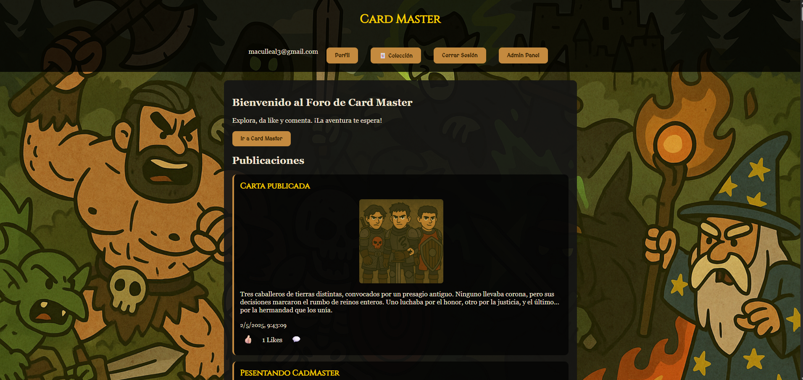
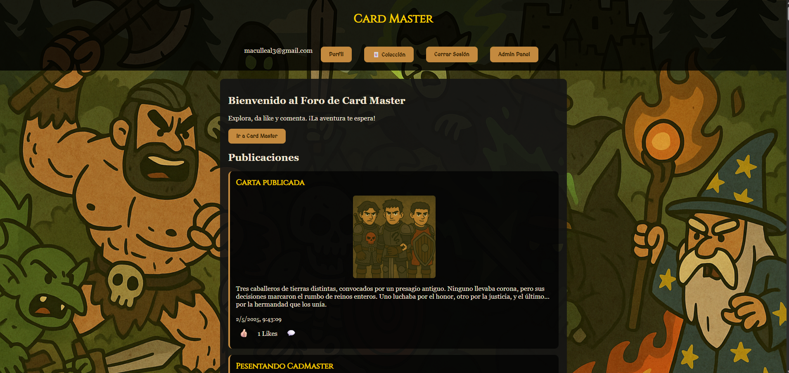
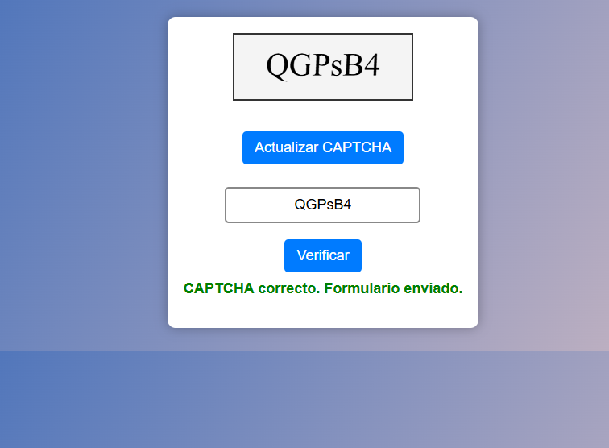
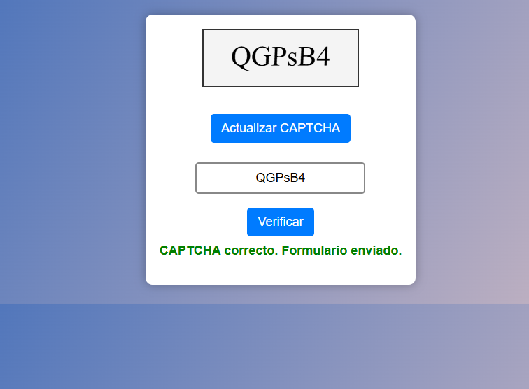

Sobre mí
Soy Damian Lopez, estudiante de Ingeniería en Computación, una carrera que integra conocimientos de programación, electrónica, arquitectura de computadoras y sistemas inteligentes para desarrollar soluciones tecnológicas de alto nivel. A lo largo de mi formación he descubierto un especial interés en el diseño, modelado y administración de bases de datos. Me apasiona entender cómo se estructuran, optimizan y protegen los datos dentro de una aplicación, ya que son el núcleo de cualquier sistema confiable y escalable. Me gusta trabajar en proyectos donde la lógica del backend y la organización de la información juegan un papel esencial. Busco aplicar buenas prácticas en el manejo de datos, asegurar su integridad y rendimiento, y conectar bases de datos de forma eficiente con frontends dinámicos y seguros. Aun así, mantengo una visión integral del desarrollo, lo que me permite trabajar tanto en la parte visual como en la lógica interna de los sistemas.
JavaScript Python C / C++ Java HTML / CSS
Frameworks y bibliotecas: React.js Node.js Tkinter Firebase TensorFlow / DeepFace Bootstrap
Herramientas y entornos: Git / GitHub Visual Studio Code Android Studio MySQL / Firebase Firestore OpenCV Qt Creator
Mi objetivo: Especializarme en bases de datos modernas, con énfasis en la gestión eficiente de datos en tiempo real, escalabilidad, seguridad y replicación, y aplicarlo en soluciones tecnológicas de alto impacto.


 



 
